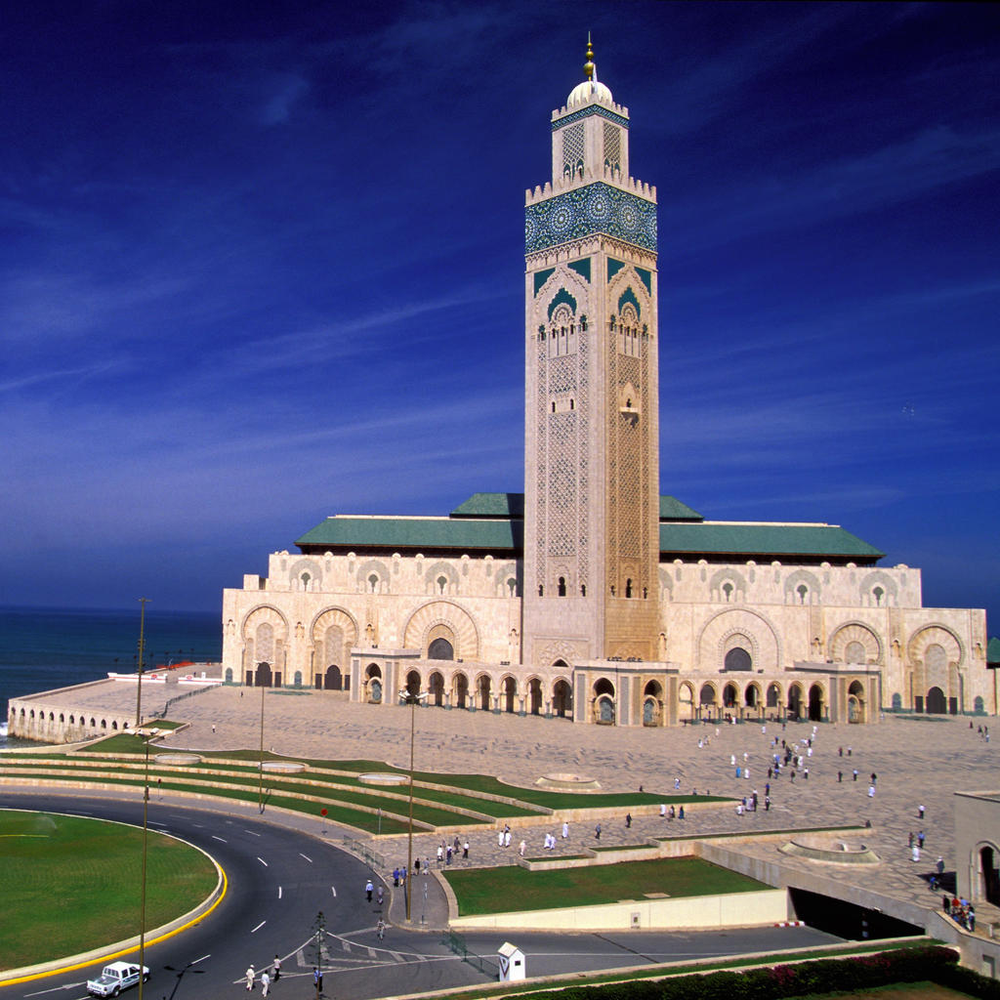

Casablanca
Casablanca
Economic Capital

Casablanca is the largest city of Morocco. Located on the Atlantic coast of the Chaouia
plain in the central-western part of Morocco, it is the second largest city in the
Maghreb region and the eighth-largest in the Arab world. Casablanca is Morocco's chief port
and one of the largest financial centers in Africa. According to the 2019 population estimate,
the city has a population of about 3.71 million in the urban area
and over 4.27 million in the Greater Casablanca
Reservé